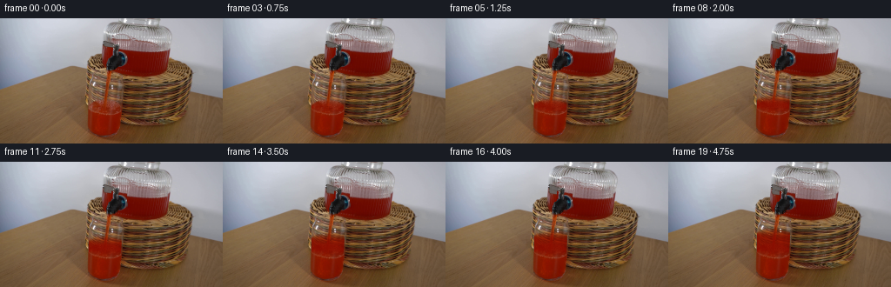
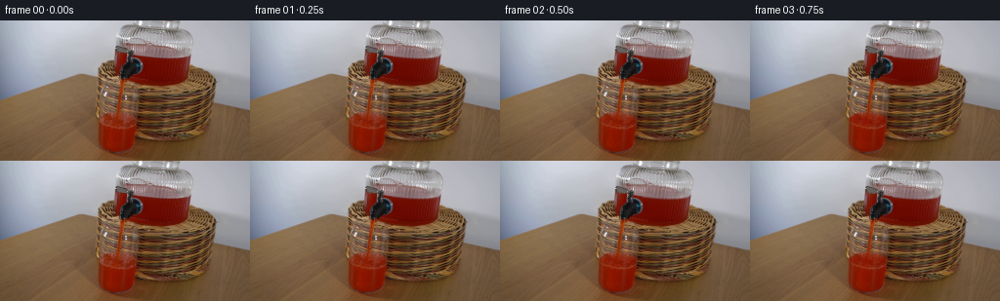
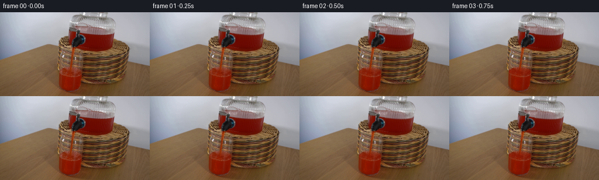

CODING AGENTS AS PIXEL WORLD MODELS
traex/GPT-6.1-Sol · 0066
点击播放 · 原生 RGB 像素
逐轮保存的候选
回放视频、检查图与代码变化。
每份候选均可单独播放。实际图片检查记录在下方工具轨迹中。
候选 01播放与检查图
点击播放 · 原生 RGB 像素


展开代码变化
--- 上一保存版本
+++ 本次保存版本
@@ -0,0 +1,133 @@
+from pathlib import Path
+import numpy as np
+from PIL import Image
+from scipy.ndimage import map_coordinates, gaussian_filter
+import artifact_io
+
+CASE = Path(__file__).resolve().parent
+H, W = 144, 256
+BASE = np.array(Image.open(CASE / 'first_frame.png').convert('RGB'), dtype=np.uint8)
+Y, X = np.mgrid[:H, :W].astype(np.float64)
+
+
+def smooth(a, b, v):
+ z = np.clip((v-a)/(b-a), 0, 1)
+ return z*z*(3-2*z)
+
+
+def sample(image, xx, yy):
+ return np.stack([map_coordinates(image[...,c], [yy,xx], order=1, mode='nearest') for c in range(3)], -1)
+
+
+def overlay(image, color, alpha):
+ return image*(1-alpha[...,None]) + np.asarray(color)*alpha[...,None]
+
+
+def make_frame(t):
+ im = BASE.astype(np.float64)
+ # The tap is already running in the supplied frame. Continue the existing
+ # gravity-fed flow, rather than introducing another nozzle or moving a vessel.
+ rise = 22.0 * (t/4.75) - .6*(t/4.75)**2
+ level = 103.0-rise
+
+ # Lower the reservoir interface with volume transferred to the tumbler.
+ # A local vertical pullback moves the fluid, not the dispenser or tap.
+ drop = rise/4.35
+ falloff = 1-smooth(43,65,Y)
+ sample_y = Y-drop*falloff
+ shifted = sample(im, X, sample_y)
+ jar = smooth(117,120,X)*(1-smooth(191,194,X))
+ jar *= smooth(22,25,Y)*(1-smooth(62,66,Y))
+ # Keep the bright vertical glass reflections and the black valve stationary.
+ red = (im[...,0]-im[...,1])/(im[...,0]+im[...,1]+1)
+ liquid_selection = smooth(.06,.17,red)*smooth(58,90,im[...,0])
+ jar *= liquid_selection
+ # A fixed metallic tap projects in front of the red reservoir.
+ black_tap = (X>127)&(X<146)&(Y>30)&(Y<57)
+ jar[black_tap] *= .05
+ im = overlay(im, shifted, jar*.96)
+
+ # Perspective cross section of the liquid in the stationary clear glass.
+ # The back and front of the free surface form a shallow ellipse. Increasing
+ # optical thickness preserves the original glass highlights and refraction.
+ cx = 120.75
+ rx = 19.25
+ q = (X-cx)/rx
+ root = np.sqrt(np.maximum(0, 1-q*q))
+ ry = 8.25
+ back0 = 103.0-ry*root
+ front0 = 103.0+ry*root
+ back = level-ry*root
+ front = level+ry*root
+ wet0 = smooth(back0,front0+.6,Y)
+ wet = smooth(back,front+.6,Y)
+ delta = np.maximum(0,wet-wet0)
+ # The tumbler narrows slightly near the heavy rounded base.
+ left = 100.4+.013*np.maximum(0,Y-85)
+ right = 140.0-.041*np.maximum(0,Y-85)
+ inside = smooth(left,left+1.4,X)*(1-smooth(right-1.4,right,X))
+ inside *= (np.abs(q)<1).astype(float)
+ inside *= (1-smooth(126,131,Y))
+ delta *= inside
+ # Specular transmission from the original clear glass stays in front.
+ neutral = np.minimum(im[...,1],im[...,2])
+ highlight = smooth(113,205,neutral) * smooth(-15,35,35-np.abs(im[...,0]-im[...,2]))
+ reflection = np.clip(highlight*.88,0,.88)
+ absorb = delta*(1-reflection)
+ tinted = im.copy()
+ tinted[...,0] = im[...,0] + (135-im[...,0])*(1-np.exp(-1.15*absorb))
+ tinted[...,1] = 9+(im[...,1]-9)*np.exp(-2.02*absorb)
+ tinted[...,2] = 1+(im[...,2]-1)*np.exp(-3.6*absorb)
+ im = tinted
+
+ # Surface sheen: a very thin changing meniscus, with expanding low-amplitude
+ # waves at the impact. All rings lie in the liquid's projected ellipse.
+ ellipse = ((X-cx)/rx)**2 + ((Y-level)/ry)**2
+ surface = (1-smooth(.89,1.05,ellipse))*inside
+ change = min(1,t/.65)
+ meniscus = np.exp(-((ellipse-1)/.085)**2)*inside*change
+ im = overlay(im, [156,40,16], .12*meniscus)
+ # Impact position is the bottom of the original nearly vertical red jet.
+ impact_x = 121.9 + .15*np.sin(t*4.0)
+ radial = np.sqrt((X-impact_x)**2 + ((Y-(level-.1))/.37)**2)
+ phase = radial*1.18-t*11.5
+ ripple = np.exp(-radial/8.5) * np.cos(phase)
+ ripple *= surface*change
+ im[...,0] += ripple*7.0
+ im[...,1] += ripple*2.6
+ im[...,2] += ripple*1.3
+ # The stream has capillary fluctuations but no discontinuous jump in position.
+ stream_end = level+1.4
+ xc = 125.2-.10*(Y-61)+.16*np.sin(1.35*Y-9.5*t)
+ d = X-xc
+ domain = smooth(58.3,61.1,Y)*(1-smooth(stream_end-1,stream_end+1.1,Y))
+ jet = np.exp(-(d/1.42)**4)*domain
+ # Reuse the original textured stream; animate subpixel ripples in its core.
+ pulse = np.sin(Y*1.42-t*16.4)+.35*np.sin(Y*3.1-t*24.0)
+ im[...,0] += jet*(5.0*pulse+1.7)
+ im[...,1] += jet*(1.6*pulse)
+ sheen = np.exp(-((d+.38)/.28)**2)*domain
+ im = overlay(im, [179,71,40], sheen*(.06+.025*np.sin(Y*.75-t*17)))
+ # Tiny turbulent red crown at the jet/surface junction, not an added object.
+ hit = np.exp(-((X-impact_x)/2.4)**2-((Y-level)/1.2)**2)*surface*change
+ im = overlay(im, [169,47,19], hit*(.14+.055*np.sin(t*17.0)))
+ # A couple of low, contained droplets return immediately to the liquid.
+ for k in range(2):
+ cyc=(t*2.65+k*.49)%1
+ if cyc<.68:
+ age=cyc/.68
+ dx=(-1 if k==0 else 1)*(1.1+2.0*age)
+ dy=-2.1*np.sin(np.pi*age)
+ droplet=np.exp(-((X-impact_x-dx)/.44)**2-((Y-level-dy)/.60)**2)
+ droplet*=.15*np.sin(np.pi*age)*change*inside
+ im=overlay(im,[164,41,16],droplet)
+ return np.clip(np.rint(im),0,255).astype(np.uint8)
+
+
+def main():
+ frames=np.stack([BASE.copy()]+[make_frame(i/4) for i in range(1,20)])
+ assert np.array_equal(frames[0], BASE)
+ artifact_io.save(frames, CASE)
+
+if __name__ == '__main__':
+ main()
候选 02播放与检查图
点击播放 · 原生 RGB 像素

展开代码变化
--- 上一保存版本
+++ 本次保存版本
@@ -1,7 +1,7 @@
from pathlib import Path
import numpy as np
from PIL import Image
-from scipy.ndimage import map_coordinates, gaussian_filter
+from scipy.ndimage import map_coordinates
import artifact_io
CASE = Path(__file__).resolve().parent
@@ -79,6 +79,14 @@
tinted[...,1] = 9+(im[...,1]-9)*np.exp(-2.02*absorb)
tinted[...,2] = 1+(im[...,2]-1)*np.exp(-3.6*absorb)
im = tinted
+ # Carry a little of the photographed liquid's actual optical texture with
+ # the rising interface. This keeps the subtle refracted red/brown variations
+ # of the real setup rather than making the newly wetted region a flat paint.
+ fluid_y = Y+rise*(1-smooth(level+8.5,130,Y))
+ fluid_photo = sample(BASE.astype(np.float64),X,fluid_y)
+ fluid_red = (fluid_photo[...,0]-fluid_photo[...,1])/(fluid_photo[...,0]+fluid_photo[...,1]+1)
+ photo_weight = .38*delta*(1-reflection)*smooth(.28,.55,fluid_red)
+ im = overlay(im,fluid_photo,photo_weight)
# Surface sheen: a very thin changing meniscus, with expanding low-amplitude
# waves at the impact. All rings lie in the liquid's projected ellipse.
可观测工具轨迹
实际执行的命令与返回图片。
命令 1exit 0
/bin/bash -lc 'ls -la && cat prompt.txt && cat GENERATION_RULES.md'
命令 2exit 0
/bin/bash -lc "cat artifact_io.py && python - <<'PY'
from PIL import Image
import numpy as np
im=np.array(Image.open('first_frame.png'))
print('shape',im.shape)
# quantize ascii colors
chars=[]
for y in range(0,144,3):
s=''
for x in range(0,256,3):
r,g,b=im[y:y+3,x:x+3].mean((0,1)); v=(r+g+b)/3
if r>g*1.35 and r>b*1.25 and r>65:c='R' if r>150 else 'r'
elif r>g*1.14 and g>b*1.25:c='T' if v>130 else 't'
elif min(r,g,b)>215:c=' '
elif max(r,g,b)-min(r,g,b)<22:c='.' if v>160 else ':' if v>100 else 'o' if v>55 else '#'
else:c='+' if v>150 else '-' if v>85 else 'x'
s+=c
print(f'{y:3d} '+s)
PY"命令 3exit 0
/bin/bash -lc "python - <<'PY'
from PIL import Image
import numpy as np
im=np.asarray(Image.open('first_frame.png')).astype(float)
print('RGB sampled every 8 pixels:')
for y in range(4,144,8):
print('y',y, ' '.join('%3d,%3d,%3d'%tuple(im[y,x].astype(int)) for x in range(4,256,8)))
print('\\nLUMINANCE, x=60..220 every 2 px y=15..143 every 2:')
lum=im@np.array([.2126,.7152,.0722]); ramp=' .,:;irsXA253hMHGS#9B&@'
for y in range(16,144,2):
print('%3d '%y+''.join(ramp[min(len(ramp)-1,int((255-lum[y:y+2,x:x+2].mean())/256*len(ramp)))] for x in range(60,222,2)))
PY"命令 4exit 0
/bin/bash -lc "python - <<'PY'
from PIL import Image
import numpy as np
A=np.array(Image.open('first_frame.png')).astype(float)
for mode in ['red','brightness','hue']:
print('\\nMODE',mode,'x90..151, 1pixel columns (x ticks):')
print(' '+''.join(str(x//10%10) for x in range(90,152)))
print(' '+''.join(str(x%10) for x in range(90,152)))
for y in range(24,141,2):
out=''
for x in range(90,152):
r,g,b=A[y:y+2,x].mean(0)
if mode=='red':
val=(r-g)/(r+g+1)
out+=' .,:;irsXA253hM#@'[int(np.clip(val,0,.999)*16)]
elif mode=='brightness':
val=(r*.21+g*.72+b*.07)/256
out+='@#MH32AXsri;:,. '[int(val*16)]
else:
if (r-g)/(r+g+1)>.60:out+='R'
elif (r-g)/(r+g+1)>.4:out+='r'
elif r>g*1.15 and g>b*1.25:out+='t'
elif min(r,g,b)>150:out+='.'
elif (max(r,g,b)-min(r,g,b))<15:out+='#' if r<65 else 'o' if r<100 else ':'
else:out+='B' if b>r else 'x'
print('%3d '%y+out)
PY"命令 5exit 0
/bin/bash -lc "python - <<'PY'
from PIL import Image
import numpy as np
A=np.array(Image.open('first_frame.png')).astype(float)
for y in range(24,138):
mask=(A[y,:,0]>1.8*A[y,:,1])&(A[y,:,0]>70)&(np.arange(256)>95)
ix=np.where(mask)[0]; bounds=np.r_[0,np.where(np.diff(ix)>1)[0]+1,len(ix)]
segs=['%d-%d'%(ix[a],ix[b-1]) for a,b in zip(bounds[:-1],bounds[1:]) if b>a and b-a>=2]
print(y,','.join(segs))
print('\\nDetailed y91-116,x97-150: colors')
for y in range(91,117):
print(y,' '.join('%02x%02x%02x'%tuple(A[y,x].astype(int)) for x in range(97,151)))
PY"命令 6exit 0
/bin/bash -lc "python - <<'PY'
from PIL import Image
import numpy as np
A=np.array(Image.open('first_frame.png'))
print('Samples RGB x=99,100,101,102,106,107,108,109,110,115,120,123,128,132,137,140,143,146,149')
for y in range(60,100):
print(y,' '.join('%3d,%3d,%3d'%tuple(A[y,x]) for x in [99,100,101,102,106,107,108,109,110,115,120,123,128,132,137,140,143,146,149]))
print('Each pixel luminance by column x95..160 full res:')
L=A@np.array([.2126,.7152,.0722]); chars=' .:-=+*#%@'
print(' '+''.join(str(x//10%10) for x in range(95,161)))
print(' '+''.join(str(x%10) for x in range(95,161)))
for y in range(55,139):
print('%3d '%y+''.join(chars[min(9,int(L[y,x]/180*10))] for x in range(95,161)))
PY"命令 7exit 0
/bin/bash -lc "python - <<'PY'
from PIL import Image
import numpy as np
A=np.array(Image.open('first_frame.png')).astype(float)
for y in [58,60,65,70,75,80,85,90,94,98,102,108,114,120,125,130,133,135]:
print('\\ny=',y)
for x in range(97,149):
print('%3d:%3d,%3d,%3d'%(x,*A[y,x]),end=' ')
if x%8==4:print()
print()
PY"命令 8exit 0
/bin/bash -lc "python - <<'PY'
import numpy as np
from PIL import Image
A=np.array(Image.open('first_frame.png'))
for y in range(48,62):
print(y,[(x,A[y,x].tolist()) for x in range(94,145) if A[y,x].min()>140 or A[y,x,0]>180])
PY"命令 9exit 0
/bin/bash -lc "python - <<'PY'
import importlib.util
for x in ['cv2','scipy']:
print(x, bool(importlib.util.find_spec(x)))
from PIL import Image
print(Image.open('first_frame.png').mode)
PY"命令 10exit 0
/bin/bash -lc "cat > generate.py <<'PY'
from pathlib import Path
import numpy as np
from PIL import Image
from scipy.ndimage import map_coordinates, gaussian_filter
import artifact_io
CASE = Path(__file__).resolve().parent
H, W = 144, 256
BASE = np.array(Image.open(CASE / 'first_frame.png').convert('RGB'), dtype=np.uint8)
Y, X = np.mgrid[:H, :W].astype(np.float64)
def smooth(a, b, v):
z = np.clip((v-a)/(b-a), 0, 1)
return z*z*(3-2*z)
def sample(image, xx, yy):
return np.stack([map_coordinates(image[...,c], [yy,xx], order=1, mode='nearest') for c in range(3)], -1)
def overlay(image, color, alpha):
return image*(1-alpha[...,None]) + np.asarray(color)*alpha[...,None]
def make_frame(t):
im = BASE.astype(np.float64)
# The tap is already running in the supplied frame. Continue the existing
# gravity-fed flow, rather than introducing another nozzle or moving a vessel.
rise = 22.0 * (t/4.75) - .6*(t/4.75)**2
level = 103.0-rise
# Lower the reservoir interface with volume transferred to the tumbler.
# A local vertical pullback moves the fluid, not the dispenser or tap.
drop = rise/4.35
falloff = 1-smooth(43,65,Y)
sample_y = Y-drop*falloff
shifted = sample(im, X, sample_y)
jar = smooth(117,120,X)*(1-smooth(191,194,X))
jar *= smooth(22,25,Y)*(1-smooth(62,66,Y))
# Keep the bright vertical glass reflections and the black valve stationary.
red = (im[...,0]-im[...,1])/(im[...,0]+im[...,1]+1)
liquid_selection = smooth(.06,.17,red)*smooth(58,90,im[...,0])
jar *= liquid_selection
# A fixed metallic tap projects in front of the red reservoir.
black_tap = (X>127)&(X<146)&(Y>30)&(Y<57)
jar[black_tap] *= .05
im = overlay(im, shifted, jar*.96)
# Perspective cross section of the liquid in the stationary clear glass.
# The back and front of the free surface form a shallow ellipse. Increasing
# optical thickness preserves the original glass highlights and refraction.
cx = 120.75
rx = 19.25
q = (X-cx)/rx
root = np.sqrt(np.maximum(0, 1-q*q))
ry = 8.25
back0 = 103.0-ry*root
front0 = 103.0+ry*root
back = level-ry*root
front = level+ry*root
wet0 = smooth(back0,front0+.6,Y)
wet = smooth(back,front+.6,Y)
delta = np.maximum(0,wet-wet0)
# The tumbler narrows slightly near the heavy rounded base.
left = 100.4+.013*np.maximum(0,Y-85)
right = 140.0-.041*np.maximum(0,Y-85)
inside = smooth(left,left+1.4,X)*(1-smooth(right-1.4,right,X))
inside *= (np.abs(q)<1).astype(float)
inside *= (1-smooth(126,131,Y))
delta *= inside
# Specular transmission from the original clear glass stays in front.
neutral = np.minimum(im[...,1],im[...,2])
highlight = smooth(113,205,neutral) * smooth(-15,35,35-np.abs(im[...,0]-im[...,2]))
reflection = np.clip(highlight*.88,0,.88)
absorb = delta*(1-reflection)
tinted = im.copy()
tinted[...,0] = im[...,0] + (135-im[...,0])*(1-np.exp(-1.15*absorb))
tinted[...,1] = 9+(im[...,1]-9)*np.exp(-2.02*absorb)
tinted[...,2] = 1+(im[...,2]-1)*np.exp(-3.6*absorb)
im = tinted
# Surface sheen: a very thin changing meniscus, with expanding low-amplitude
# waves at the impact. All rings lie in the liquid's projected ellipse.
ellipse = ((X-cx)/rx)**2 + ((Y-level)/ry)**2
surface = (1-smooth(.89,1.05,ellipse))*inside
change = min(1,t/.65)
meniscus = np.exp(-((ellipse-1)/.085)**2)*inside*change
im = overlay(im, [156,40,16], .12*meniscus)
# Impact position is the bottom of the original nearly vertical red jet.
impact_x = 121.9 + .15*np.sin(t*4.0)
radial = np.sqrt((X-impact_x)**2 + ((Y-(level-.1))/.37)**2)
phase = radial*1.18-t*11.5
ripple = np.exp(-radial/8.5) * np.cos(phase)
ripple *= surface*change
im[...,0] += ripple*7.0
im[...,1] += ripple*2.6
im[...,2] += ripple*1.3
# The stream has capillary fluctuations but no discontinuous jump in position.
stream_end = level+1.4
xc = 125.2-.10*(Y-61)+.16*np.sin(1.35*Y-9.5*t)
d = X-xc
domain = smooth(58.3,61.1,Y)*(1-smooth(stream_end-1,stream_end+1.1,Y))
jet = np.exp(-(d/1.42)**4)*domain
# Reuse the original textured stream; animate subpixel ripples in its core.
pulse = np.sin(Y*1.42-t*16.4)+.35*np.sin(Y*3.1-t*24.0)
im[...,0] += jet*(5.0*pulse+1.7)
im[...,1] += jet*(1.6*pulse)
sheen = np.exp(-((d+.38)/.28)**2)*domain
im = overlay(im, [179,71,40], sheen*(.06+.025*np.sin(Y*.75-t*17)))
# Tiny turbulent red crown at the jet/surface junction, not an added object.
hit = np.exp(-((X-impact_x)/2.4)**2-((Y-level)/1.2)**2)*surface*change
im = overlay(im, [169,47,19], hit*(.14+.055*np.sin(t*17.0)))
# A couple of low, contained droplets return immediately to the liquid.
for k in range(2):
cyc=(t*2.65+k*.49)%1
if cyc<.68:
age=cyc/.68
dx=(-1 if k==0 else 1)*(1.1+2.0*age)
dy=-2.1*np.sin(np.pi*age)
droplet=np.exp(-((X-impact_x-dx)/.44)**2-((Y-level-dy)/.60)**2)
droplet*=.15*np.sin(np.pi*age)*change*inside
im=overlay(im,[164,41,16],droplet)
return np.clip(np.rint(im),0,255).astype(np.uint8)
def main():
frames=np.stack([BASE.copy()]+[make_frame(i/4) for i in range(1,20)])
assert np.array_equal(frames[0], BASE)
artifact_io.save(frames, CASE)
if __name__ == '__main__':
main()
PY
python generate.py
python - <<'PY'
from PIL import Image
import numpy as np
A=np.array(Image.open('frames/00.png')).astype(float)
B=np.array(Image.open('frames/19.png')).astype(float)
print('frame equality', np.array_equal(A,np.array(Image.open('first_frame.png'))))
print('pixels changed:',np.sum(np.any(A"'!=B,axis=2)))
print('"'MAE total:',abs(A-B).mean(),'maximum',abs(A-B).max())
print('cup endframe: x96..145, row60..135; R=liquid, t=table, .=reflection')
for y in range(60,136):
line=''
for x in range(96,146):
r,g,b=B[y,x]
if r>1.8*g and r>70:c='R' if r>2.8*g else 'r'
elif min(r,g,b)>140:c='.'
elif r<65 and g<50:c='#'
else:c='t'
line+=c
print(y,line)
print('artifacts:',__import__('os').listdir('.'))
PY"命令 11exit 0
/bin/bash -lc "python - <<'PY'
import numpy as np
from PIL import Image
from pathlib import Path
frames=np.stack([np.asarray(Image.open(p)) for p in sorted(Path('frames').glob('*.png'))])
np.savez_compressed('.tmp/candidate_01.npz',frames=frames)
PY"命令 12exit 0
/bin/bash -lc "python generate.py && python - <<'PY'
from pathlib import Path
import numpy as np
from PIL import Image
F=np.stack([np.asarray(Image.open(p)) for p in sorted(Path('frames').glob('*.png'))])
assert F.shape==(20,144,256,3) and F.dtype==np.uint8
assert np.array_equal(F[0],np.asarray(Image.open('first_frame.png')))
assert np.array_equal(F[:,:,:94],np.broadcast_to(F[0,:,:94],F[:,:,:94].shape))
np.savez_compressed('.tmp/candidate_final.npz',frames=F)
print('Verified 20 uint8 RGB frames at 256Ã144; first frame identical; fixed background.')
print('Adjacent-frame mean pixel changes:',np.round(np.abs(np.diff(F.astype(float),axis=0)).mean((1,2,3)),3))
print('Output: pixels.npz, index.html, frames/00.pngâ19.png')
PY"保存候选 2 份；完成命令 12 次；可验证图片返回 0 张。原始 API 响应与完整日志保留在本地。